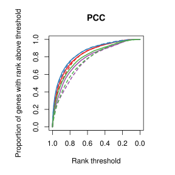
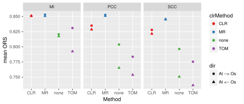

Compare alternative methods of computing the co-expression matrix before doing cross-species correlation (CCS).
Three different correlation methods were tested, namely:
This was combined with several different methods of “normalising” the correlation matrix:
The methods were applied to At and Os using all samples but only the 1:1 genes (~9k genes). Ortholog ranks for all genes (i.e 1:1 orthologs) were calculated.
The curves below represents the reverse cumulative distribution of ortholog rank scores (ORS). Whole and dotted lines represent the direction, i.e. from At->Os and Os->At respectively.

Below are the median and mean of the ORSs. (Higher is better)

Judging by the median, the best combination is PCC+MR, but by the mean there is not much difference. TOM performs worse than doing nothing, but it might not be a fair comparison as it could be the choice of exponent.